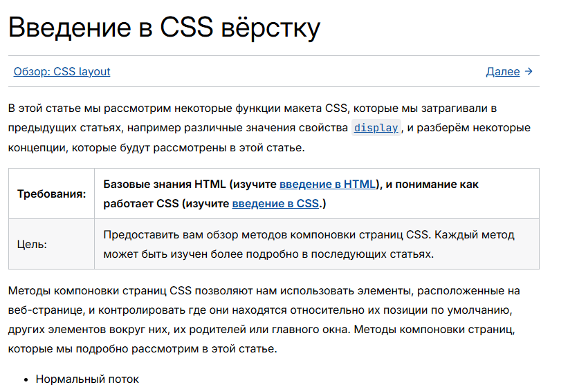

Журнал проекта
Запись №1
Изучены требования практики. Изучены материалы по работе с html, css и GitHub.

Изучение css
Запись №2
Разработана на основе прримеров (в открытом доступе) структура сайта и созданы основные страницы с кратким заполнением, оформлением и навигацией для первой версии.
Запись №3
Отредактированы страницы и добавлено больше контента, (пишу заранее)
Запись №4
Заполнил отчет по практике и погадал на картах Таро, что будет дальше)))).
Запись №5
Выполнен окончательный дизайн сайта (если поменяю) и подготовлена оставшаяся документация.